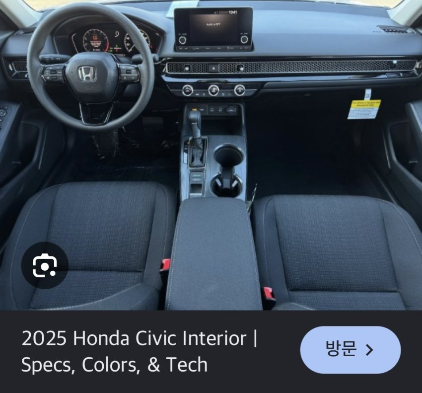
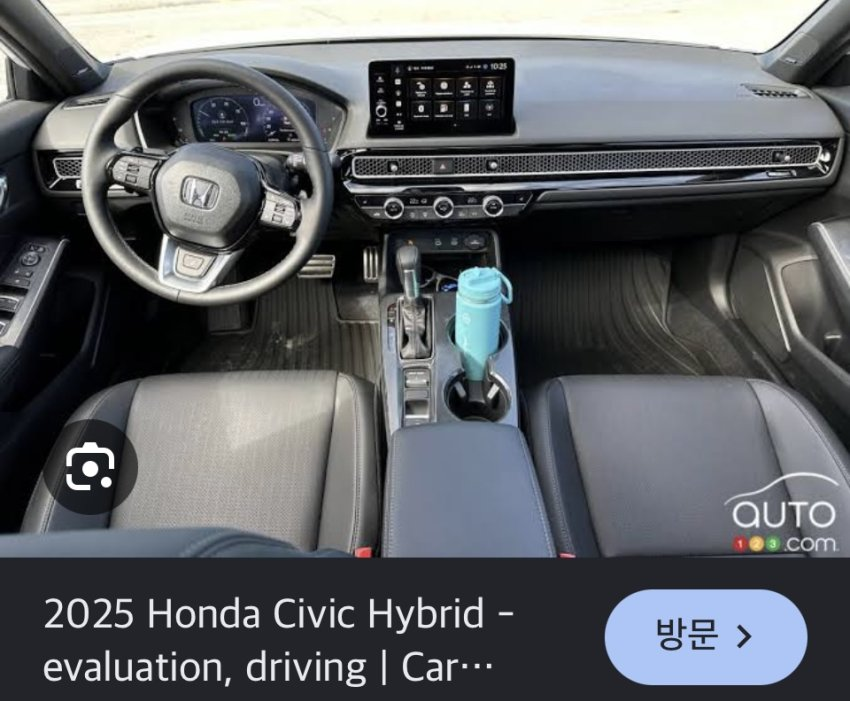
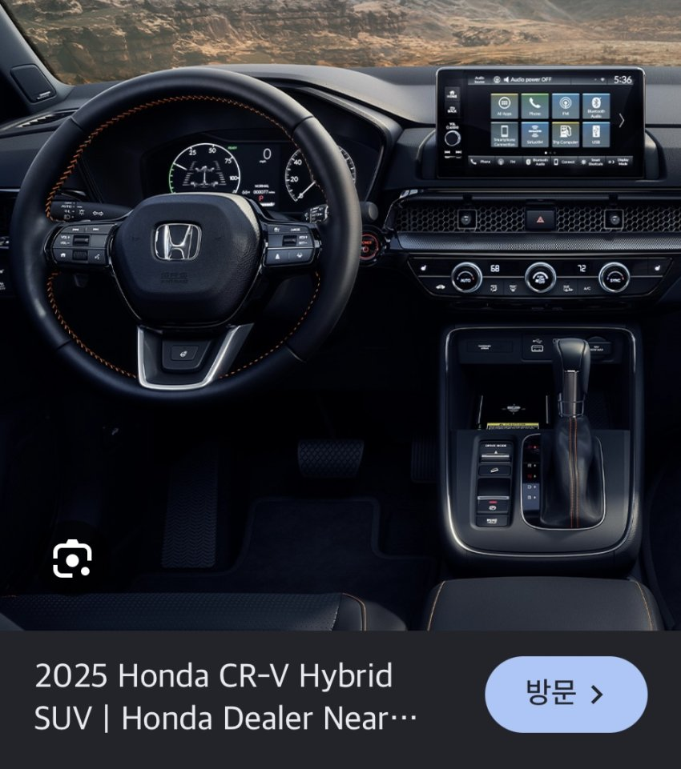
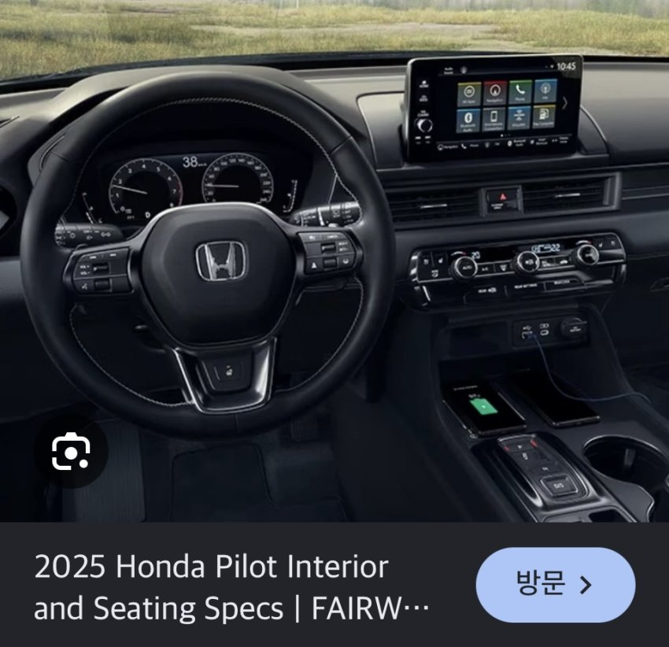
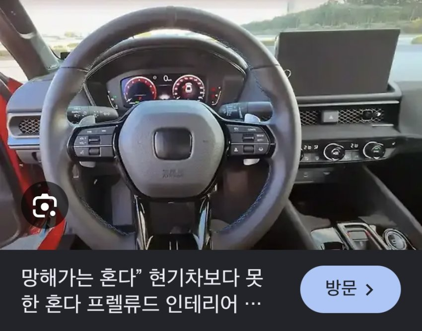
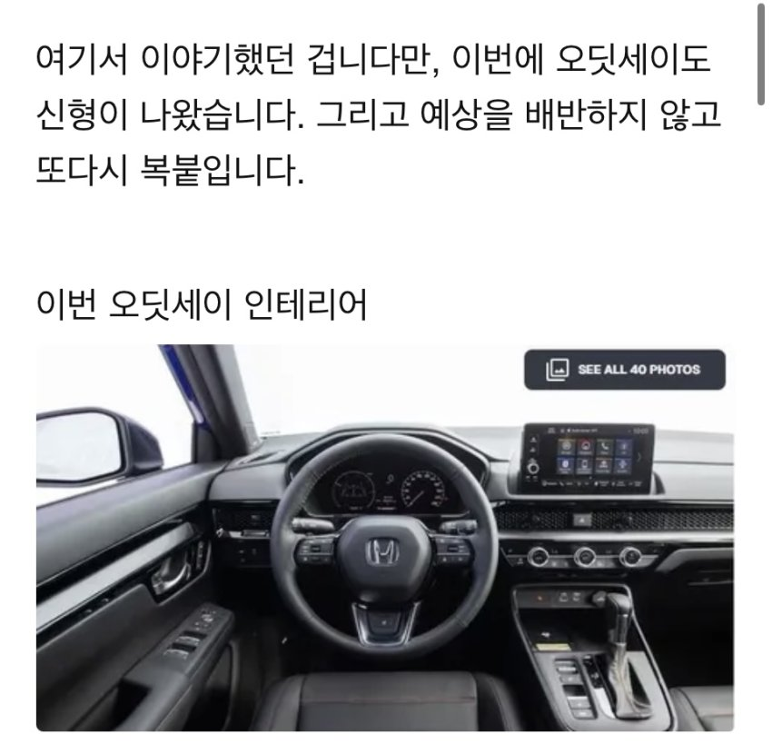
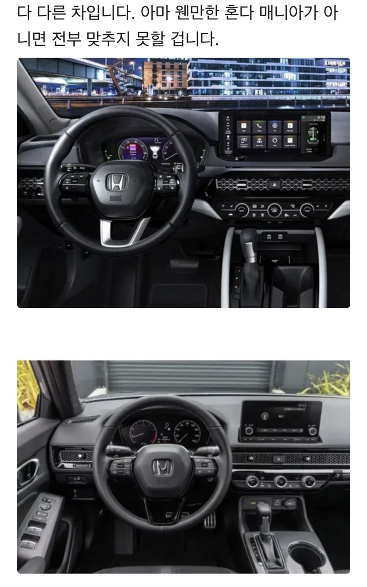
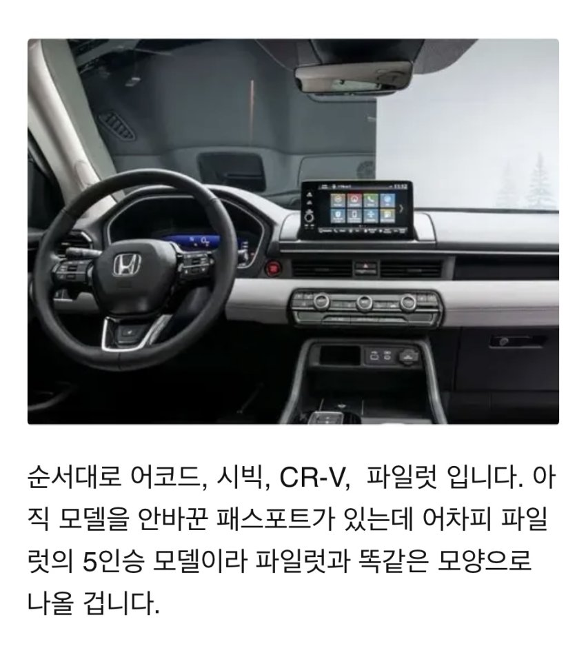
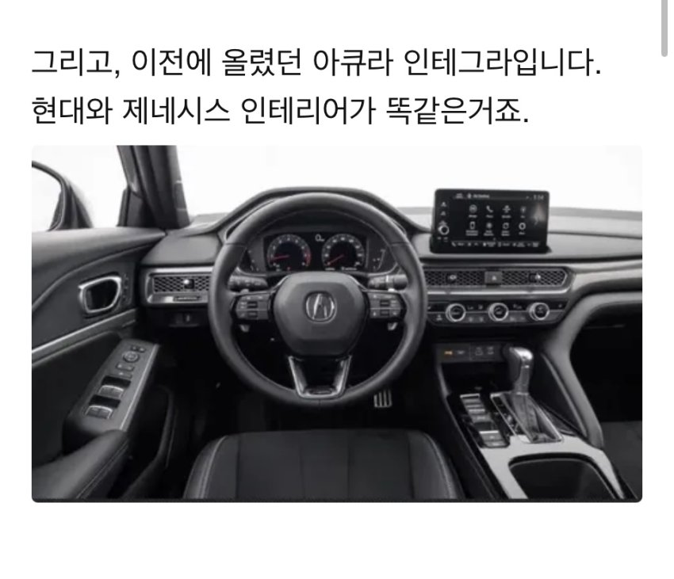
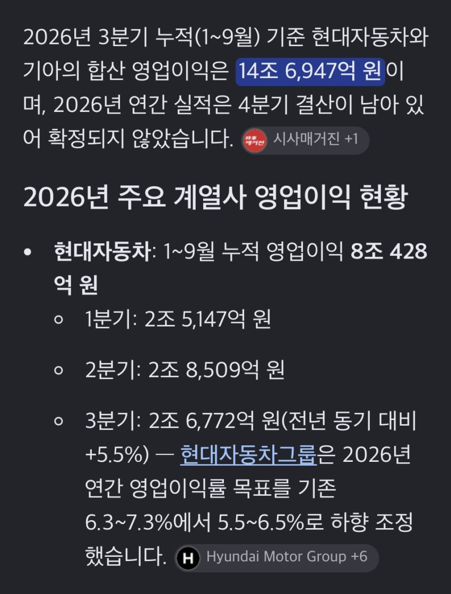
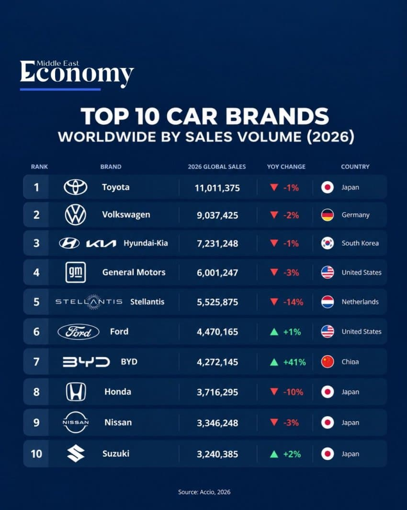
혼다의 인테리어 원가절감 꼬라지 ㅋㅋ
아반떼급 엔트리 시빅부터 고급브랜드 아큐라까지
인테리어가 다 똑같음 ㅋㅋㅋㅋㅋ
복사 붙혀놓기 수준임 ㅋㅋ
현기로치면 아반떼랑 제네시스랑
내부소재랑 인테리어가 똑같은거임
저짓거리로 원가절감 쳐하고 엔저 영향받아서
영끝으로 영업이익 한국돈 1조~3조 겨우나왔는데
현기차그룹 5분의1 수준임 ㅋㅋㅋㅋㅋㅋ
심지어 혼다의 2026년 전세계 판매량은
작년대비 -10% 감소했음
중국판매량은 -45% 반토막남 ㅋㅋㅋㅋㅋ
동남아에서도 중국차한테 따이고 판매량 극감소
댓글
수집 당시 댓글 180개
ㅇㅇ · 11.20 23:13:49
ㅇㅇ · 11.20 23:14:59
· ㅇㅇ · 11.20 23:16:35
· ㅇㅇ · 11.21 04:06:49
· ㅇㅇ · 11.21 06:17:26
· ㅇㅇ · 11.21 09:12:16
· ㅇㅇ · 11.21 09:26:01
ㅇㅇ · 11.20 23:16:56
원또 · 11.20 23:19:42
ㅇㅇ · 11.20 23:22:10
· ㅇㅇ · 11.21 09:12:48
ㅇㅇ · 11.20 23:24:49
ㅇㅇ · 11.20 23:28:00
· ㅇㅇ · 11.21 09:29:00
ㅇㅇ · 11.20 23:31:17
· ㅇㅇ · 11.21 04:39:58
ㅇㅇ · 11.20 23:35:47
ㅇㅇ · 11.20 23:38:58
혼다 짭 현대
ㅇㅇ · 11.20 23:40:01
미프 · 11.20 23:53:15
· ㅇㅇ · 11.21 09:14:06
벡마 · 11.20 23:59:56
· 벡마 · 11.21 00:00:27
· ㅇㅇ · 11.21 09:14:22
· 벡마 · 11.21 09:16:34
· ㅇㅇ · 11.21 09:29:35
ㅇㅇ · 11.21 00:11:00
OO · 11.21 00:15:23
· SonyXperia · 11.21 01:27:11
ㅇㅇ · 11.21 00:18:22
ㅇㅇ · 11.21 00:22:17
<>~~ · 11.21 00:22:36
· ㅇㅇ · 11.21 06:41:34
알카 · 11.21 00:24:47
LagunaBeach · 11.21 00:26:46
· ㅇㅇ · 11.21 00:29:13
· ㅇㅇ · 11.21 09:14:52
ㅇㅇ · 11.21 00:39:21
· ㅇㅇ · 11.21 00:56:11
· ㅇㅇ · 11.21 09:16:49
ㅇㅇ · 11.21 00:43:07
히이잉 · 11.21 01:09:53
00 · 11.21 01:09:56
ㅇㅇ · 11.21 01:29:57
· ㅇㅇ · 11.21 04:00:23
· ㅇㅇ · 11.21 04:40:45
· ㅇㅇ · 11.21 09:17:34
· ㅇㅇ · 11.21 10:12:00
· ㅇㅇ · 11.21 11:16:57
· ㅇㅇ · 11.21 11:17:55
oo · 11.21 01:38:33
ㅇㅇ · 11.21 02:02:26
ㅇㅇ · 11.21 02:11:12
ㅇㅇ · 11.21 02:11:22
ㅇㅇ · 11.21 02:11:27
ㅇㅇ · 11.21 02:16:17
ㅇㅇ · 11.21 03:24:26
· ㅇㅇ · 11.21 08:59:10
glory1158 · 11.21 03:31:43
· ㅇㅇ · 11.21 04:01:04
· ㅁㅁ · 11.21 08:05:31
· ㅇㅇ · 11.21 09:19:45
· ㅇㅇ · 11.21 09:21:18
ㅇㅇ · 11.21 04:00:08
· ㅇㅇ · 11.21 04:02:33
· ㅇㅇ · 11.21 07:33:16
ㅇㅇ · 11.21 04:00:59
ㅇㅇ · 11.21 04:32:45
ㅇㅇ · 11.21 04:35:46
· ㅇㅇ · 11.21 05:17:09
· ㅇㅇ · 11.21 09:22:35
ㅇㅇ · 11.21 05:52:38
ㅇㅇ · 11.21 05:55:46
· Dd · 11.21 06:44:51
· ㅇㅇ · 11.21 09:31:47
· ㅇㅇ · 11.21 09:33:26
· ㅇㅇ · 11.21 11:32:39
ㅇㅇ · 11.21 06:50:48
ㅇㅇ · 11.21 06:52:54
원갈이 · 11.21 07:10:21
ㅇㅇ · 11.21 07:25:59
ㅇㅇ · 11.21 07:30:11
ㅇㅇ · 11.21 07:31:44
· ㅇㅇ · 11.21 09:17:38
ㅇㅇ · 11.21 07:32:48
ㅇㅇ · 11.21 08:15:42
ㅇㅇ · 11.21 08:56:05
· ㅇㅇ · 11.21 09:16:47
· ㅇㅇ · 11.21 09:23:40
· ㅇㅇ · 11.21 09:24:00
ㅇㅇ · 11.21 09:16:22
345 · 11.21 09:44:07
· ㅇㅇ · 11.21 10:13:30
· ㅇㅇ · 11.21 11:21:24
ㅇㅇ · 11.21 09:45:01
hawaii50 · 11.21 09:50:55
· ㅇㅇ · 11.21 11:29:51
ㅇㅇ · 11.21 11:06:51
· ㅇㅇ · 11.21 11:22:54
ㅇㅇ · 11.21 11:39:45
ㅇㅇ · 11.19 11:33:09
· 차갤러 · 11.19 11:46:47
· 킹갓롤황 · 11.20 22:57:31
차갤러 · 11.19 11:33:49
· 차갤러 · 11.19 11:47:03
김김밥 · 11.19 11:34:10
· 차갤러1 · 11.19 11:38:20
포도쥬스. · 11.19 11:34:44
· ㅇㅇ · 11.21 00:09:00
· ㅇㅇ · 11.21 09:25:02
ㅇㅇ · 11.19 11:35:01
ㅇㅇ · 11.19 11:35:37
· ㅇㅇ · 11.21 01:22:39
· ㅇㅇ · 11.21 09:25:39
ㅇㅇ · 11.19 11:37:11
· ㅇㅇ · 11.19 11:47:44
· ㅇㅇ · 11.21 09:26:21
혼다팬보이 · 11.19 11:39:35
차갤러 · 11.19 11:43:27
ㅇㅇ · 11.19 12:34:32
차갤러2 · 11.19 14:17:43
차갤러3 · 11.19 17:57:48
· ㅇㅇ · 11.20 22:53:27
차갤러4 · 11.19 18:37:00
· ㅇㅇ · 11.19 20:38:50
울엄마 · 11.19 21:48:49
ㅇㅇ · 11.20 04:04:53
봇치쟝 · 11.20 22:46:50
ㅇㅇ · 11.20 22:47:15
필기구 · 11.20 22:47:43
· ㅇㅇ · 11.20 23:05:56
· ㅇㅇ · 11.21 09:26:54
2대남 · 11.20 22:49:19
· ㅇㅇ · 11.21 04:52:16
ㅇㅇ · 11.20 22:50:58
· ㅇㅇ · 11.20 22:51:51
미쿠닷컴 · 11.20 22:51:15
· 우사기 · 11.21 07:05:59
ㅇㅇ · 11.20 22:51:54
ㅇㅇ · 11.20 22:52:00
· ㅇㅇ · 11.20 23:11:30
· ㅇㅇ · 11.21 09:03:37
ㅇㅇ · 11.20 22:52:03
ㅇㅇ · 11.20 22:55:30
· ㅇㅇ · 11.20 23:15:25
· ㅇㅇ · 11.20 23:18:33
· ㅇㅇ · 11.21 09:04:07
ㅇㅇ · 11.20 22:55:52
킹갓롤황 · 11.20 22:58:45
ㅇㅇ · 11.20 22:59:11
ㅇㅇ · 11.20 22:59:17
ㅇㅇ · 11.20 23:00:31
· ㅇㅇ · 11.20 23:06:31
ㅇㅇ · 11.20 23:01:29
ㅇㅇ · 11.20 23:02:04
· ㅇㅇ · 11.20 23:02:19
· ㅇㅇ · 11.20 23:06:38
· ㅇㅇ · 11.21 04:45:41
· ㅇㅇ · 11.21 09:04:40
ㅇㅇ · 11.20 23:03:03
나 원종. 인정한다 일본은 망했다
ㅇㅇ · 11.20 23:03:28
· ㅇㅇ · 11.20 23:03:42
· ㅇㅇ · 11.20 23:15:55
· ㅇㅇ · 11.20 23:17:02
· ㅇㅇ · 11.21 09:05:36
ㅇㅇ · 11.20 23:03:58
ㅇㅇ · 11.20 23:04:51
· ㅇㅇ · 11.21 09:08:12
ㅇㅇ · 11.20 23:05:01
ㅇㅇ · 11.20 23:05:49
ㅇㅇ · 11.20 23:10:14
ㅇㅇ · 11.20 23:10:20
ㅇㅇ · 11.20 23:10:44
ㅇㅇ · 11.20 23:11:47
· ㅇㅇ · 11.20 23:16:46
· ㅇㅇ · 11.21 09:10:15
· ㅇㅇ · 11.21 09:11:06
ㅇㅇ · 11.20 23:12:28
ㅇㅇ · 11.20 23:13:02
히이잉 · 11.20 23:13:14